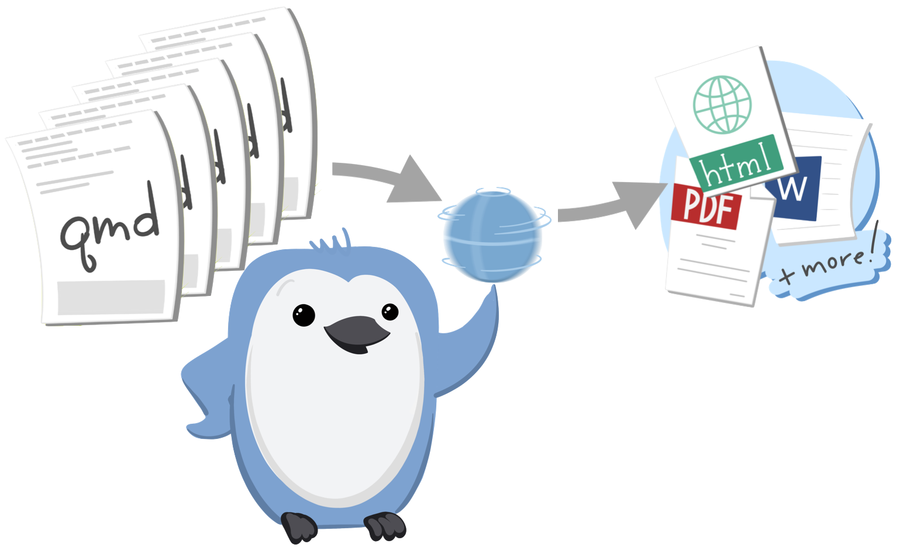

Teach
Quarto has profound implications.
Mine:As a student I loved R Markdown. It’s amazing when to hit that Knit button, see their code and prose come together – you can often hear a “wow, that’s so cool” in the classroom the first time that happens. I’ve also loved that this is a tool that they can pick up easily on the first day of an intro course, and it grows with them as their statistical and computational expertise grows. However, as students’ expertise in these areas grow, the computation gets more resource intensive (and even sometimes involving multiple languages) and they end up needing different output formats to support their needs, like PDFs in specific journal styles or a thesis with multiple chapters. A pleasant surprise in teaching with Quarto has been how much less steep the learning curve is for making this transition from single, simple document to a multi-document projects. Let me tell you the story of one of my thesis students.
For learning:
- RStudio comes with everything, no additional install needed
- visual editor – Julie will say more
- code-link
- yaml errors
For teaching:
- revealjs
- Show hamburger menu outline and print to PDF
- chalkboard
- multiplex: Slides / scroll for audience
- execute > echo: true
- Add code line highlighting to plotting chunk
Features that are useful for research:
- quarto journals
Quarto flattens the learning curve

So, in regards to teaching, I’ve talked about a much less steep hill students need to climb as their projects grow. I’ve also said this was a pleasant surprise as it was not something I had thought about when I started teaching with Quarto. But, in hindsight, this was no coincidence. Quarto’s features like consistent citation syntax, more intentional control over when computations should run or rerun, and a single, minimal yaml that controls inputs, layouts, theming, etc. all contribute to flattening this learning curve.
Quarto can grow with learners in a profound way

And beyond learners growing and expanding the scope of their work easily with Quarto, Quarto can grow with them in a profound way as well.
–> The fact that Quarto is language and authoring tool independent offers an opportunity for folks to take Quarto with them on their data science journey, wherever that journey takes them. I mean.. I’m almost tempted to finally learn Python to see it in action in Quarto. But who I know is learning Python, and Julia, and other languages are my students in their Computer Science courses. To imagine that they could learn R in RStudio using Quarto in my course, and then continue to use Quarto in Jupyter in their CS courses… That sounds like such a bright future to me!
[Pause] And a bright future includes things we can’t even imagine yet.
[Mine continue on next slide]